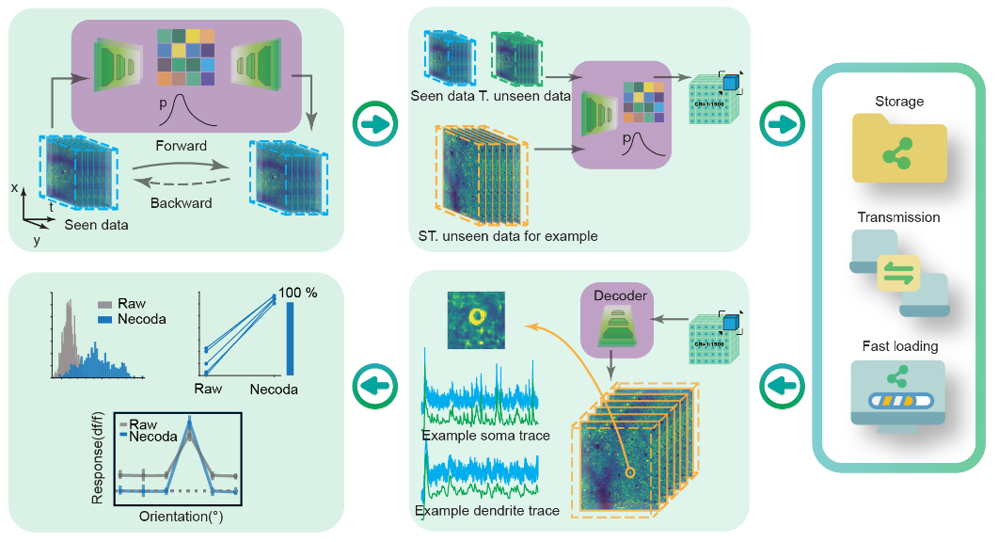
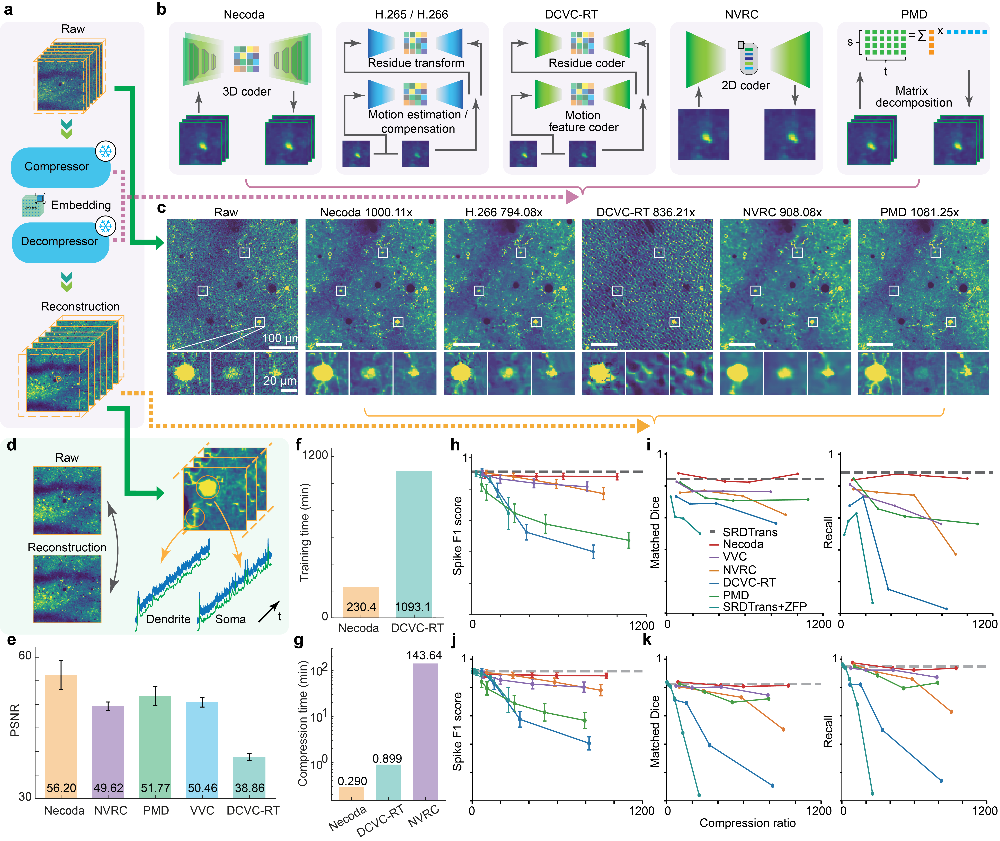
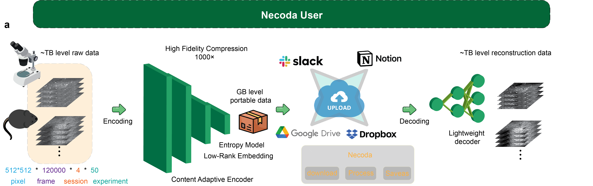
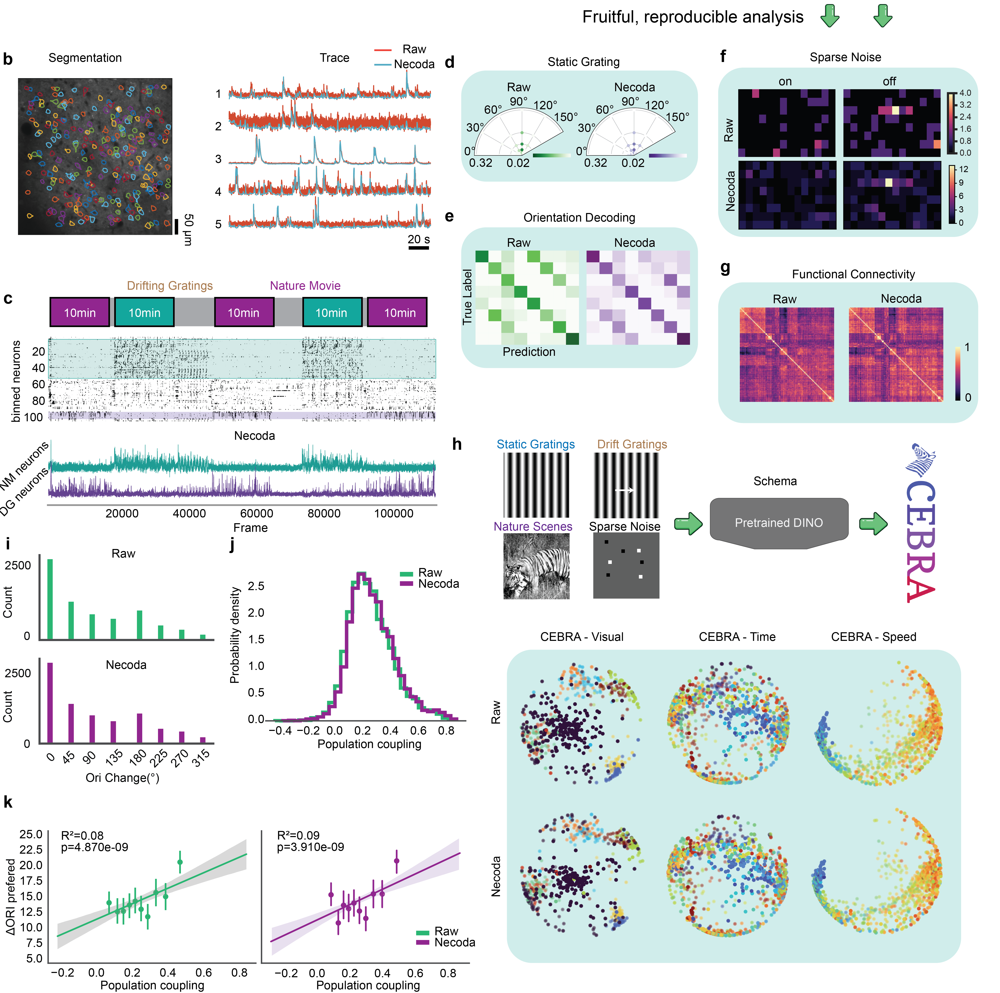
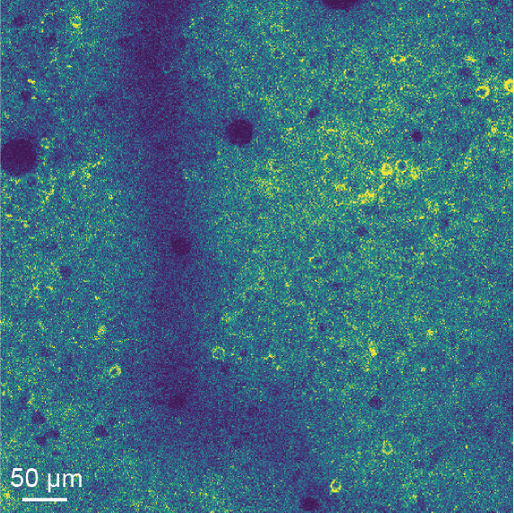
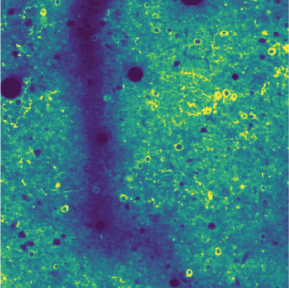

Modern neuroscience relies upon large-scale multi-dimensional datasets, yet their terabyte-scale size severely hinders data sharing, reuse, and reproducibility. To overcome these hurdles, we present Necoda, a deep learning method that compresses functional imaging data by over 1,000-fold while preserving high-fidelity neural signals. Necoda leverages a content-adaptive spatiotemporal neural network architecture with an entropy model, generalizes across unseen data, and enables one-time training for compressing numerous exper-iments. Necoda demonstrates broad effectiveness across datasets from diverse species, brain regions and imaging modalities. Importantly, scientific findings, from single-cell tuning properties to population-level dynamics, are faithfully replicated from the compressed data. By alleviating the data-sharing bottleneck, Necoda facilitates broad dissemination of large-scale datasets, accelerating discovery and enhancing reproducibility in neuroscience.

Necoda employs an hourglass-shaped encoder-decoder architecture with a bottleneck in the middle. After training with seen data, Necoda is able to compress temporally unseen data or spatiotemporally unseen data into embeddings with 1,000 times smaller size, which can be used for storage and sharing. When necessary, these embeddings can be rapidly decompressed into data with full physiological details, facilitating downstream analysis.

When benchmarked against other traditional and learned video compression methods, Necoda demonstrates superior performance in reconstruction quality, compression ratio, and speed for functional neural data. It uniquely provides an efficient and robust solution that preserves vital physiological information at high compression ratios where other methods either fail, are unstable with noise, or lack the practical generalization needed for routine use.

As a proof-of-concept, we replicated the results of a previous study using Allen brain observatory datasets with a size around 4.8TB. By drastically reducing download time from months to under an hour and accelerating data processing, Necoda allows scientists to fully and rapidly reproduce the published findings, from raw data to final conclusions, within half a day.



Necoda has been comprehensively validated across a diverse range of neuroimaging datasets, encompassing various imaging modalities and species. These include two-photon random access mesoscopy (2pRAM), CaImAn and Neurofinder benchmarks, both high- and low-power zebrafish imaging datasets, electrophysiological capture, and additional modalities.